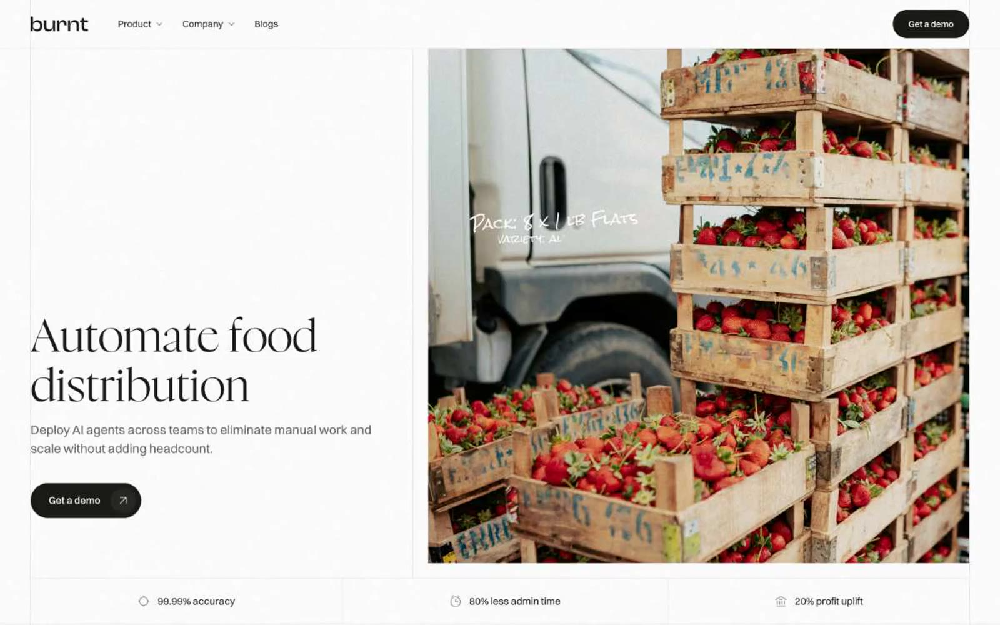

Getburnt 的 Design.md 主题展示，围绕AI、浅色界面、SaaS 产品、开发工具组织页面。
Explore Getburnt's light AI design system: Storm Charcoal #1a1a17, Canvas White #ffffff colors, Nyght Serif, Switzer typography, and DESIGN.md for AI agents.

#1a1a17: #1a1a17#5f5f5d: #5f5f5d#ffffff: #ffffff#d71920: #d71920#de4c00: #de4c00#efa680: #efa680#040c06: #040c06#271503: #271503#eadfcf: #eadfcf#a49784: #a49784#f5f5f5: #f5f5f5#000000: #000000display: Nyght Serifbody: Switzermono: ui-monospacehints: Nyght Serif,Switzer,ui-monospace